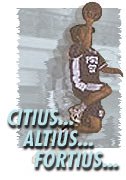

|
Teambuilding
Committee Updates : Updates
Looking
Back...
by: Joel Kisteria
It's
this time of the school year again to talk about what had
happened to our ITC Teambuilding Activities……..and
there was some fun and fulfilling stuff we had for the past
few months... and
it goes a little something like this…
UNO >
The
can collection we're having is still on going. Our Ms. Celine
has been redeeming the crushed cans near her place. We are
earning something from this endeavor, which we intend to use
on our Outreach Activity someday soon.
Well,
as we pursue this can collection project the TBC hopes that
everyone will have their own little way of helping. Be it
cleaning/crushing the cans or in redeeming them to redemption
areas. MASAYANG MAGYUPI NG LATA, KUNG SAMA-SAMA..
DOS >
Summer
is over and we all know that ITPs are not about to let a God-given
summer pass by without having fun under the heat of the summer
sun. At ginawa ng ating mga komite ngayon ay iniba nila ang
gimik - Beach Valley, Iba, Zambales from 28-30 April. We left
the office almost midnight, arrived at dawn.. and we partied
on… there were a lot to discover (remember the beach
football?... the Replacements on the beach), the snorkeling
and the snoring (tulog kasi ng tulog eh), the friendly dikyas,
pictures (parerecopy na naman ito), bloopers and bloopers
and more bloopers.. Thanks to the outing komites!!!
TRES >
"…and the golden voices were heard…" the
ITC Singing Sensation group led by Ma'am Vivs got an invitation
from Lasallian Pastoral Office (LSPO) to sing during the Thursday
noon masses. And the ITPs gratefully obliged by making their
choir debut last June 14. Still, these golden voices are in
constant practice almost every afternoon (is an official recording
on the way?). More power guys!!!
QUATRO
>
Higher,
Stronger… (funnier?, huh)… alright so here goes...
the Sports Development Program, we, the athletic ITPs are
looking forward to is finally here. In pursuit of a better
performance in the coming sportsfest of the University and
also for our own health, PSI sent a group of young training
coordinators for the major sports disciplines we participate
in (basketball, volleyball, badminton andtable tennis). The
group intends to aid us in our skills and drills activities.
Hopefully, we will really give our competitors great matches
when the sportsfest for the school year opens . But we need
not wait for those events to come for us to start conditioning
andtoning our selves. So for us all…aim higher, stronger,
(funnier?… HEALTHIER, huh!)
|